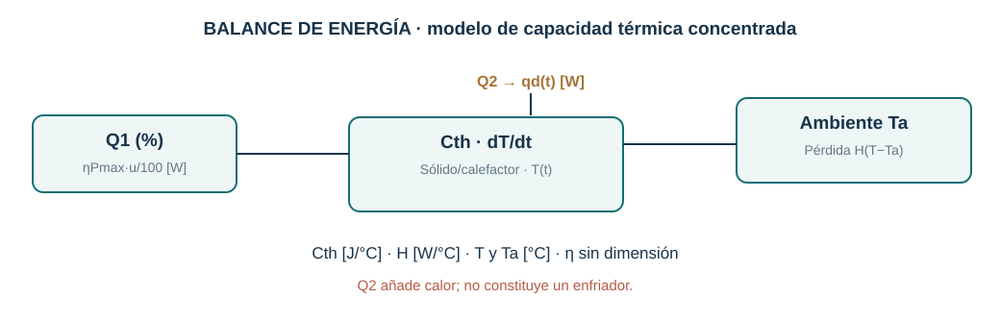
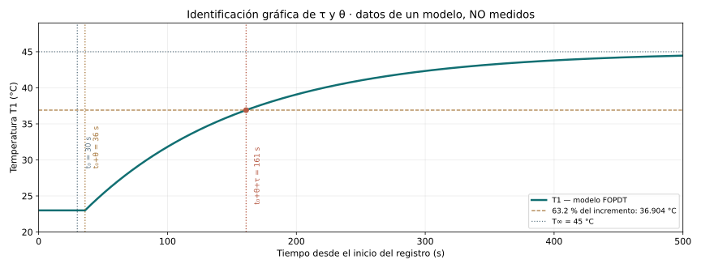

Semana 14 · Modelado dinámico e identificación FOPDT
Derivar un modelo de primer orden y ajustarlo a datos. Teoría, ecuaciones explicadas, ejercicios guiados y experimentación con Python/TCLab.
2 sesiones · 120 min cada unaTCLab · PythonEvidencia experimental
1. Objetivos y organización
Clase 1 · 120 min
Modelo físico
Balance de energía y ecuaciones diferenciales: parámetros, estado estacionario y linealización.
Clase 2 · 120 min
Identificación
Escalón, ganancia Kp, constante τ, tiempo muerto θ, ajuste por mínimos cuadrados y validación con datos propios.
Logro: construir un modelo aproximado y justificar su utilidad y limitaciones.
Al finalizar: derivar el balance térmico de un volumen de control; obtener Kp y τ con unidades; representar el retardo θ; identificar FOPDT con método del 63.2 % y regresión; validar mediante residuos y RMSE.
2. Modelado térmico desde los principios físicos
2.1 Hipótesis y elección del volumen de control
El balance de energía del TCLab se plantea primero sobre un modelo térmico equivalente de un calentador, no como una descripción exacta de todos los elementos de la tarjeta. La temperatura del sólido se aproxima uniforme, las pérdidas se modelan como proporcionales a la diferencia con el ambiente y la potencia eléctrica se transforma en calor con una eficiencia efectiva. La respuesta medida T1 puede incorporar retraso de sensor y acoplamiento con Q2; estos efectos se absorberán parcialmente en los parámetros identificados.

Volumen de control: capacidad térmica equivalente, aporte Q1, pérdidas al ambiente y perturbación térmica Q2.
Definimos Cth [J/°C] como capacidad térmica, H [W/°C] como conductancia térmica global, Pmax [W] como potencia máxima efectiva, η [adimensional] como eficiencia, Ta [°C] como ambiente, u [%] como mando Q1, y qd [W] como la perturbación adicional.
Balance energético: J/s = W − W + W
La izquierda representa almacenamiento de energía; el primer término derecho es calor aportado por Q1; el segundo es disipación al entorno; el tercero es calor adicional, por ejemplo Q2. Q2 solo calienta: disminuir Q2 no equivale a disponer de refrigeración activa.
2.2 Estado estacionario y variables de desviación
En un punto operativo constante, dT/dt=0. Con qd=0:
Temperatura de equilibrio respecto al ambiente
Restamos el equilibrio al balance dinámico, definiendo x(t)=T(t)−Teq y v(t)=u(t)−ueq. Así eliminamos las constantes de operación y obtenemos:
Ecuación dinámica lineal en desviaciones
τ [s] y Kp [°C/%] identifican rapidez y sensibilidad
La constante de tiempo τ expresa cuánta energía almacena el sistema por unidad de pérdida; la ganancia Kp determina cuánto aumenta la temperatura estacionaria por cada punto porcentual adicional de potencia. Los valores dependen de ventilación, geometría, estado operativo y condiciones del montaje.
2.3 Transformada de Laplace y respuesta al escalón
Con condiciones iniciales nulas para desviaciones, (τs+1)X(s)=KpV(s). El modelo de primer orden es:
Función de transferencia de planta, entrada en % y salida en °C
Si en t=t0 aumenta la potencia en Δu puntos porcentuales, la temperatura sigue una exponencial. La solución se obtiene resolviendo τ dx/dt+x=KpΔu para t≥t0 y condición x(t0)=0:
Respuesta ideal sin retardo a un escalón en t0
En t=t0+τ se alcanza 63.2 % del incremento de temperatura; en 3τ cerca del 95 %. La función de transferencia no describe automáticamente saturación, variación de parámetros o perturbaciones no modeladas.
3. Identificación de modelos y tiempo muerto (FOPDT)
3.1 Por qué se introduce un tiempo muerto
El calor requiere tiempo para propagarse desde Q1 hasta el sensor. Una representación útil para diseño es el modelo First Order Plus Dead Time (FOPDT): ganancia Kp, constante de tiempo τ y tiempo muerto θ. El retardo del modelo es efectivo: puede incorporar transporte térmico, sensores, ejecución y comunicación.
Modelo FOPDT continuo
La exponencial e−θs desplaza la respuesta θ segundos. Para el escalón aplicado en t=t0:
Respuesta retardada; la parte superior es la línea base

Respuesta escalón FOPDT: instante de aplicación, tiempo muerto, nivel final y punto 63.2 % con escalas físicas.
3.2 Protocolo experimental de adquisición
Registre T1 y T2 durante 60–90 s con Q1=Q2=0 para obtener la temperatura base y verificar estabilidad; mantenga alimentación y supervisión.
En t=t0 aplique un escalón moderado Δu a Q1 (p. ej. 30 %) sin exceder los límites definidos para el montaje.
Registre t(s), Q1(%), T1(°C) y T2(°C) con marcas temporales reales. No confunda velocidad de comunicación con periodo efectivo de muestreo.
Mantenga el escalón hasta observar acercamiento al régimen estacionario; no presuponga que 3τ es suficiente si existe retardo o cambio ambiental.
Apague ambos calentadores y deje enfriar antes de repetir; documente ventilación y temperatura inicial.
Calcule baseline, cambio final, ganancia, tiempo muerto aparente y τ; valide contra datos no usados en el ajuste.
3.3 Estimación gráfica y regresión
Con dos regímenes estacionarios medidos, la estimación de ganancia estática es K̂p=(T∞−T0)/(u1−u0). El instante de inicio efectivo se determina a partir de la desviación sistemática de la respuesta respecto al ruido de línea base; una simple primera muestra distinta de T0 puede dar un θ engañoso. El punto 63.2 % satisface:
Método gráfico para el modelo FOPDT
El ajuste por mínimos cuadrados busca parámetros p=(Kp,τ,θ) que minimicen la suma de errores entre mediciones y modelo. Restrinja Kp>0, τ>0, θ≥0; si estima además la línea base, justifique ese cuarto parámetro.
Problema de identificación paramétrica
Error cuadrático medio de validación, °C
Un RMSE pequeño no garantiza que el modelo sea correcto en todos los puntos operativos. Inspeccione residuos en el tiempo, retardo, estados iniciales y señales de Q2. Reserve una segunda prueba escalón para validar capacidad predictiva, sin reajustar los parámetros sobre esa prueba.
3.4 Discretización exacta del primer orden con retardo aproximado
Con retención de orden cero y el mando constante durante cada periodo, la parte de primer orden admite la recursión exacta:
ZOH exacto sin retardo fraccional; m≈θ/Ts redondeado
La sustitución m≈round(θ/Ts) introduce error de cuantización temporal cuando θ no es múltiplo de Ts. Una discretización más cuidadosa conserva el retardo fraccional o utiliza un paso interno menor. La simulación de la unidad usa este modelo con retardo entero declarado como aproximación.
Interpretación de ingeniería. El modelo de un calentador no debe extrapolarse automáticamente a control multivariable. TCLab tiene dos calentadores, dos sensores y acoplamiento; la identificación Q1→T1 es una aproximación SISO válida para el experimento seleccionado, no una descripción completa de su comportamiento.
4. Problemas resueltos con comprobación dimensional
Problema 14.1 · Obtener los parámetros a partir de una prueba escalón
Supongamos datos simulados: T0=23 °C, Q1 pasa de 0 a 40 %, T∞=45 °C, paso aplicado en t0=30 s, inicio apreciable en 36 s y el nivel 63.2 % se alcanza en t=161 s.
Ganancia estática identificada
Tiempo muerto y temperatura característica
Constante de tiempo estimada
Modelo: Gp(s)=0.55e−6s/(125s+1), con entrada Q1 en puntos porcentuales y salida en °C. La ganancia del controlador se expresará en %/°C y no debe confundirse con Kp.
Problema 14.2 · Predicción a un tiempo concreto
Con el modelo anterior, estime T1 a los 100 s de reloj experimental, tomando t0=30 s y θ=6 s; han transcurrido 64 s de respuesta efectiva.
Predicción FOPDT a los 100 s
Distinga el tiempo absoluto t=100 s del tiempo dinámico efectivo 100−30−6=64 s. Esta resta evita el error frecuente de estimar τ desde el instante cero del registro.
Ejercicios para desarrollar sin consultar el resultado
Deduzca dimensionalmente las unidades de Cth/H y de ηPmax/(100H). Explique por qué una representa tiempo y la otra ganancia.
Para Δu=25 %, T0=24 °C, T∞=39 °C, t0=45 s, θ=8 s y t63=163 s, estime Kp, τ, θ y construya el modelo.
Obtenga la respuesta para un escalón negativo de Q1 en torno a un punto operativo con potencia positiva. Señale por qué no permite enfriar por debajo de Ta.
Con Ts=2 s, τ=100 s y θ=5 s, calcule a y discuta el error de aproximar el retardo con m=2 o m=3.
Explique por qué el ajuste RMSE puede ser bueno aunque exista deriva en la temperatura ambiente.
Prepare un ensayo repetido con dos escalones distintos y compare Kp y τ; señale una condición que pueda invalidar la linealidad local.
Genere un CSV con datos de simulación y añada la etiqueta «MODELO». Reemplácelo después con datos experimentales cuando disponga del hardware.
5. Simulador de respuesta al escalón
Modifique Kp, τ y θ. Observe qué cambia en la curva y cuál parámetro afecta a la amplitud final, la rapidez de respuesta y el comienzo del aumento.
Simulación matemática, no medición real. Escalón de Q1 = 40 % en t = 30 s.
Procedimiento experimental
Obtenga un CSV de respuesta al escalón de la Semana 13 con el mismo periodo de muestreo real.
Elimine puntos inválidos, verifique la hora del escalón y el nivel de Q1.
Estime Kp, τ y θ gráficamente, indicando la posible incertidumbre.
Ejecute semana14_identificacion.py con los datos medidos; el programa usa ajuste por mínimos cuadrados robustos.
Compare modelo y datos: RMSE, diferencias de temperatura, perturbaciones y ajuste del rango útil.
Evidencias: valores identificados con unidades, fuente del archivo, curva medida y modelo superpuestos, RMSE y comentario crítico.
6. Problemas y preguntas de análisis
Para una planta con Kp = 0.4 °C/%, τ = 160 s y θ = 10 s, determine el incremento de temperatura final para Q1 de 20 % a 50 %.
Calcule T(90 s) si el escalón comienza en t0 = 30 s, T0 = 23 °C, Q1 aumenta 40 %, Kp = 0.55 °C/%, τ = 125 s y θ = 6 s. Muestre la sustitución completa.
Explique por qué el retardo reduce el margen para elegir una ganancia de control agresiva.
Determine dos fuentes de error del modelo y proponga cómo validarlas experimentalmente.
Tutor: justifique siempre el método de identificación antes de conocer los resultados numéricos.
7. Materiales y recursos
Guía académica de la Semana 14
Documento de estudio y procedimiento experimental con objetivos, ecuaciones, problemas resueltos y actividades propuestas.
El control digital con TCLab estándar se ejecuta en Python por USB. La validación experimental y la compatibilidad real del equipo deben comprobarse presencialmente.
8. Evaluación formativa y tutor de IA
Responda las preguntas y después justifique cada selección con ecuaciones o evidencias experimentales.
1. ¿Qué parámetro describe la rapidez fundamental de una planta térmica de primer orden?
2. ¿Cuál es el efecto más directo del término integral?
3. ¿Qué representa el archivo CSV creado en modo simulación?
Tutor de IA · preguntas orientadoras
Actúe como tutor socrático de Ingeniería de Control para la Unidad III del curso INTERFAZ-IA, Semana 14. Ayúdeme a explicar la teoría matemática antes de contestar ejercicios; compruebe unidades y signos; exija justificar las ecuaciones, los modelos, el muestreo, el anti-windup y los resultados del TCLab. Pregunte una cosa por vez, sin inventar datos experimentales ni entregar directamente el resultado final.